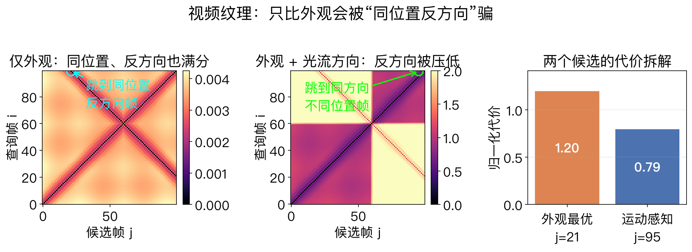
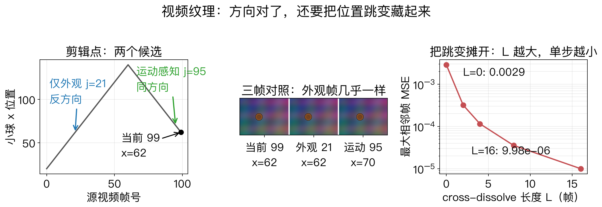
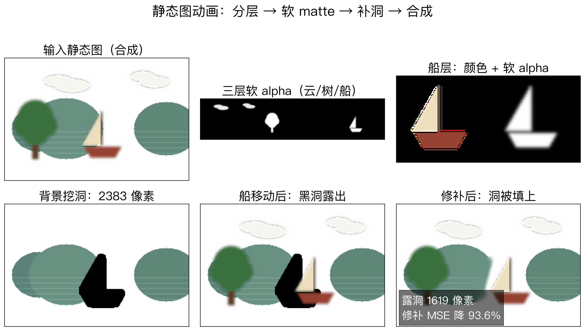

第 14 章 · 视频渲染
旧视频，怎么重新生成
视频渲染把拍到的视频重排成新序列。
一条线是视频纹理，一条线是静态图动画。
核心是从素材里找可复用的片段。
本集用合成数据演示，不拍真实视频。
依据：原书第 887 页
两条线
视频纹理：重排旧视频
静态图动画：分层动起来
合成数据，边界清楚
正课第一百三十三集
01 / 12
配音 · Video Rewrite
Video Rewrite：按音素拼嘴型
把原视频帧重排，匹配新说出的句子。
先做语音识别，提取音素和三音素。
到素材里找匹配的三音素，剪下嘴部。
贴到目标视频，还要做头部几何变换。
依据：原书第 888 页
两阶段
分析：跟踪嘴唇、下巴、头
合成：形变融合相邻嘴形
三音素带前后文
正课第一百三十三集
02 / 12
表演驱动
face transfer：用视频驱动视频
用新源视频驱动以前拍好的视频。
重渲染时带上视觉语音、表情、头姿。
全身运动可以匹配两段的光流场。
也可把表面纹理展开成稳定图像再贴回。
依据：原书第 888–889 页
关键都是对应
嘴型 → 整张脸 → 全身
对应准，换脸才不飘
对应错，表情头姿会打架
正课第一百三十三集
03 / 12
视频纹理 · 外观
外观一样，方向可能相反
把短片段重排，保持视觉连续。
最简做法是用 L2 距离比外观。
运动不同会出现伪影，视频会卡住。
钟摆外观一样，跳过去就倒着摆。
依据：原书第 889 页
只看外观不够
光流在无纹理区不可靠
视觉与运动的权重难定
要接外观，也要接运动
正课第一百三十三集
04 / 12
实验一 · 外观与运动
看图：同位置反方向，外观满分
100 帧、160×120 的合成往返小球。
第 99 帧在 x = 62，只看外观。
最近邻第 21 帧，MSE 0.0000，方向翻转。
加运动项后第 95 帧，MSE 0.002884。
依据：本集实验

外观 vs 外观+运动：第 99 帧的两个候选｜程序生成，未用教材或论文原图
正课第一百三十三集
05 / 12
运动匹配
匹配运动：三元组、矩阵、跳转表
可以匹配相邻帧的三元组或更大邻域。
就像 Video Rewrite 匹配三音素。
所有帧的相似度堆成 n×n 矩阵。
再用 FIR 强调匹配得好的子序列。
依据：原书第 889–891 页
三层
相似度矩阵：谁像谁
FIR：连续几帧都像
跳转表 / HMM：下一步去哪
正课第一百三十三集
06 / 12
实验二 · 剪辑点
看图：方向对了，位置差还在
加运动项跳到第 95 帧，方向对了。
位置从 x = 62 到 x = 70。
硬切最大相邻帧 MSE 0.002884。
cross-dissolve 到 L=16 降 99.65%。
依据：本集实验

剪辑点、三帧对照与 cross-dissolve 单步误差｜程序生成，未用教材或论文原图
正课第一百三十三集
07 / 12
过渡 · 多物体
过渡与多物体：溶解、图割、精灵
找不到完全匹配，可以用形变。
混乱运动，简单交叉溶解就够。
更好的过渡，在时空体上做 3D 图割。
多物体要先分区域，再分别动画。
依据：原书第 891 页
扩展
慢速摇摄：全景视频纹理
鱼缸的鱼：视频精灵
动态纹理：三维时空体
正课第一百三十三集
08 / 12
实验三 · 静态图动画
看图：分层、软边、补洞
240×160 合成图，背景、云、树、船四层。
软 alpha MSE 0.000000，硬边 0.001491。
硬边 PSNR 28.27 dB，软边像素 1344 个。
船右移 22 像素，补洞后误差降 93.6%。
依据：本集实验

静态图分层、软 alpha、挖洞与修补合成｜程序生成，未用教材或论文原图
正课第一百三十三集
09 / 12
静态图动画 · 五步
静态图动画：分层、抠图、补洞
第一步分层，每层用同一种运动纹理。
每层要有颜色图、matte 和合成顺序。
层移动会露背景，要用修补把洞填上。
前向映射有洞和走样，改用逆向映射。
依据：原书第 892 页
运动与参数
树摇、水波、云移、船晃、静止
全局参数：虚拟风的速度和方向
修补只需管洞边界附近
正课第一百三十三集
10 / 12
边界 · 深度方法
边界：这一集不做什么
实验用合成数据，不是真实视频。
只演示一个剪辑点，不做完整 loop。
运动项用光流方向，不是三元组加 FIR。
alpha 是图形羽化，补洞用 Telea 示意。
依据：原书第 893 页
深度方法一瞥
从静态照片猜运动场
多尺度特征双向推进
解码成循环流体视频
正课第一百三十三集
11 / 12
收束 · 下一集
外观加运动，分层加补洞
视频纹理的关键是外观加运动。
只看外观会跳错方向。
方向对了，还要用混合藏位置差。
静态图动画的关键是分层、matte、补洞。
依据：原书第 887–893 页
收束
旧视频重新剪
旧照片分层动
下一集：environment mattes 与暗角
正课第一百三十三集
12 / 12